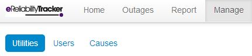

Manage¶
When you click “Manage” two options will appear underneath the tabs (shown in the image above).
Utilities¶
If you click on “Utilities” a list of all your utilities will be displayed. This page shows the name of each utility and whether it is active. By clicking on one of the utilities, you may edit the name, address, or number of customers for that utility. Editing the number of customers is important because it is used for reports.
On this page, you have the ability to search and/or delete utilities; however, you do not have the authorization to add new utilities. To delete, you have to click the boxes of those utilities that you would like to remove, click the “Bulk Action” drop down menu, and then choose “Delete Selected Utilities.”
Warning
Do not delete your utility. Deletion is permanent and you will lose all of your data.**
When editing your utility, on the right-hand side of the screen you will see an option to edit your utility’s substations, customers and equipment. By clicking on one of these three options you can create a new substation, customer or equipment by then clicking on the respective “Create New” button on the top right-hand side of the new screen. Once you’ve added the necessary information click the blue Create Substation, Create Customer or Create Equipment button.
Within the Substation screen you can add or edit your utility’s circuits. By clicking on the button on the top right-hand side of the screen where it says “Create New Circuit” you will be able to create a new circuit. If you already have a circuit entered in the system you are able to edit it by clicking the name of the circuit in the list of circuits.
Through the Edit Customers screen you can add or edit your utility’s customers. These customers are often the key accounts that a utility wants to keep track of. By clicking on the button on the top right-hand side of the screen where it says Create New Customer you will be able to create a new customer. If you already have a customer entered in the system you are able to edit it by clicking the name of the customer. These customers are also referred to as your key accounts on the outage page.
In the Edit Equipment screen you can either use the defaults listed or click the “Create New Equipment” button on the top right-hand side of your screen to name a new piece of equipment. If the new equipment does not fall under any of the categories already listed on the equipment screen, leave the Parent menu blank (—–) and enter the name of your equipment. If the new equipment is related to a piece of equipment already listed choose that similar equipment as the Parent when creating a new equipment record.
You also have the ability to import a list of equipment your utility already uses by using the Import Equipment CSV button on the top right-hand side of your screen. Any files uploaded should have the same formatting as found in the image to the right
Note
Please note that there cannot be any headers in the spreadsheet you are trying to import.
Users¶
If you click on the “Users” tab a list of all the users for your utilities will be displayed. The details that will be displayed for each user are their username, the utilities they are associated with, their role (permission level), whether they are active, and their last login time.
On this page, you have the ability to search, delete, and/or add users.
Delete User:¶
To delete users, you have to click the check boxes of those utilities that you would like to remove. Click the “Bulk Action” drop down menu, and then choose “Delete Selected Users.”
Warning
Deleting a user is permanent.
Add User:¶
To add users, you have to click the “Create New User” button on the top right of the table. The page will display two forms (shown below). If you wish to create the new user yourself, then fill out the form on the left and click “Create User” when you are done.
The best method is to assign the new user to create his/her own account (their own username/password). To assign a new user, use the form on the right. Fill out the information required and then click “Create Registration.” Once clicked, a green text box should appear below the “Create Registration” button with a registration link. Send this link to the user that wishes to create an account. The new user should follow the link and fill out the required information to create an account.